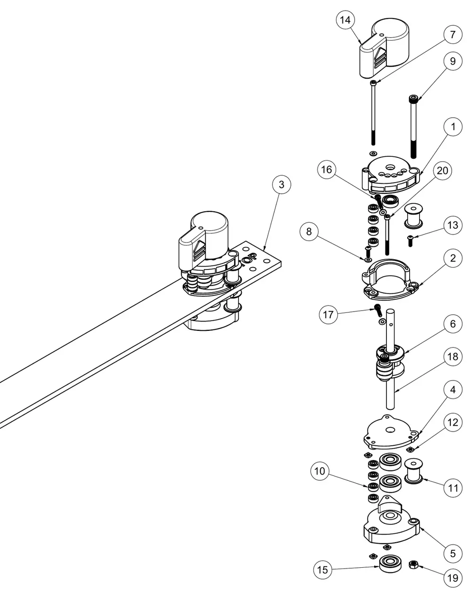

Four items are scheduled in the build notes; no intervals are set yet, so record what you find and when.
| Item | What to do |
|---|---|
| XY belts | Check for stretch and uneven tension; re-tension as below. Replacements: 15 mm GT2, glass-fibre core, 3 m per belt |
| Bearings and rails | Check the X rail and the bearings in the idlers and tensioners for roughness or play |
| Z leadscrews | Clean and re-lubricate all three leadscrews |
| Under the bed | Clear dust, chips and filament from the underside of the machine |
Each belt has a cam tensioner on the rear frame bar with an adjustment knob that indexes into one of five settings.

Loosen both belt clamps on the X-carriage.
Turn both tensioners to their lowest setting.
Pull each belt through its carriage clamp until it is snug with no slack – not tight – while keeping the gantry square to both Y rails. The holes in the linear rails are a quick reference.
Tighten the belt clamps.
Turn both tensioner knobs to the same setting.
With a print head mounted, home with G28, then run Z_TILT_ADJUST. Klipper probes three points and levels the bed with its three Z motors, retrying up to five times until the points agree within 0.05 mm. Run it after any work on the leadscrews or the bed.
Do this once when an ESC is new or replaced, or if spindle speeds look wrong. Remove the bit from the collet first.
Mount HotJoe and run CALIBRATE_ESC.
Press Step 2: Send full throttle (signal 1.0). This switches the spindle relay on with a full-throttle signal, so the ESC powers up and plays its start-up tones.
As soon as the tones finish, press Step 4: Send low endpoint (signal 0.3).
The ESC confirms with a tone. Its throttle range now matches Klipper's 0.3–1.0.